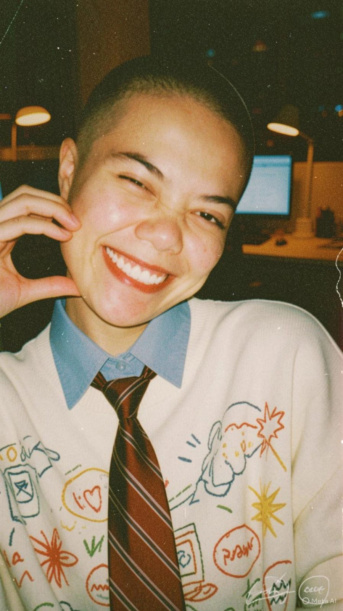

DX archive ★
WHO IS DX?
just someone collecting memories.
this little website is basically a digital version of my brain: messy, emotional, colorful, nostalgic, and filled with things i never posted anywhere else.
🎧
playlists are basically emotional time machines
🌙
most thoughts happen after midnight
📸
i take photos to remember feelings
📖
writing is easier than explaining